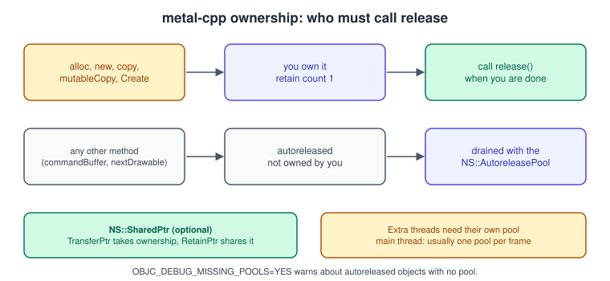
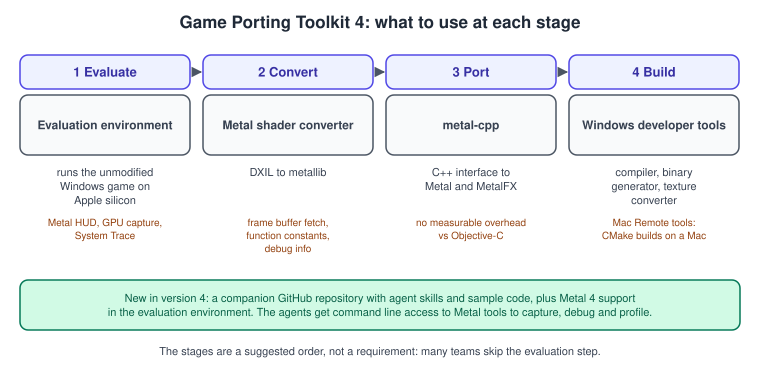
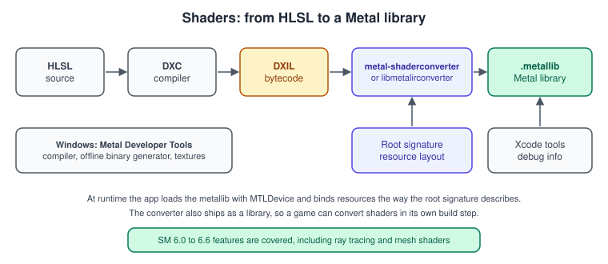

metal-cpp and Game Porting
|
This content was generated with the assistance of AI and should be verified against the official documentation before being relied on in production. |
Most game engines are written in C++, and most of them started on Windows. Apple’s graphics API is exposed to Swift and Objective-C, so two questions come up as soon as a studio looks at the Mac, the iPhone or the Vision Pro: how do I call Metal from C++ without a layer of Objective-C in the middle, and how do I get a DirectX renderer to run on it? This page answers both. The first half covers metal-cpp, the header-only C++ interface to Metal. The second half covers Game Porting Toolkit 4: the evaluation environment, the Metal shader converter that turns DXIL into Metal libraries, and the tools for working from Windows.
The facts were checked in November 2026. The versions documented are Metal 4 on the 26 operating systems, metal-cpp headers through macOS 27 and iOS 27, Game Porting Toolkit 4 and Metal shader converter 4.0; the toolchain is Xcode 27 on an Apple-silicon Mac. The compute example in this page runs on any Mac with a Metal GPU. Porting a DirectX game involves the Windows toolchain (Visual Studio 2019 or later and Windows 10 for the Windows version of the shader converter) as well as a Mac.
In the running example, the Bookshelf renderer is the Swift app of the other pages. This page shows how the same ideas look in C++: a Bookshelf compute step written with metal-cpp, and the route a DirectX version of the same shaders would take.
Two audiences, two paths
The two audiences are studios with the source of the game, who port the renderer, and anyone who wants a baseline for an existing Windows executable before deciding whether to port. The same tools serve both.
metal-cpp
metal-cpp is a header-only C++ interface to Metal. It maps the Objective-C classes, constants and enumerations of Metal,
Foundation and Core Animation to C++ in the MTL, NS and CA namespaces. Apple’s description is that it has no measurable
overhead compared with using the Objective-C headers, because the C++ calls are inlined, and that it uses no wrapper
containers that would add allocations. The headers are identical across iOS, iPadOS, macOS and tvOS, with the same functions,
constants and enumerations and the same availability. Calls such as MTL::Device::supports...() return false when the
selector does not exist on the running OS, and the ErrorDomain string constants are weak-linked and become null when
unavailable.
What each release added
The headers follow the operating system releases. From the README of the repository:
| OS release | metal-cpp content |
|---|---|
macOS 12 and iOS 15 |
Initial release. |
macOS 13 and iOS 16 |
All APIs of the release, |
macOS 14 and iOS 17 |
MetalFX support and all APIs of the release. |
macOS 15 and iOS 18 |
All APIs of the release. |
macOS 26 and iOS 26 |
All APIs, Apple10 GPU family support, Metal 4 support, and the new MetalFX denoiser and temporal scalers. |
macOS 26.4 and iOS 26.4 |
All APIs of the release, plus improvements and fixes. |
macOS 27 and iOS 27 |
All new APIs of the release. Release 27.0.1 adds the Metal APIs for the Apple11 GPU family. |
The Metal 4 interfaces (MTL4CommandQueue, MTL4CommandBuffer and the rest, covered in
What’s New in Metal 4) are therefore available from C++. The examples in
this page use the long-established command queue and command buffer so that they run on every supported Mac; the structure of
the Metal 4 version is the one described in Hello Triangle with Metal 4.
Setup
The header requirement is C++17 or later, because metal-cpp uses constexpr in NS::Object. You link the Foundation,
QuartzCore and Metal frameworks and add the extracted metal-cpp folder to the header search path.
The implementation of the wrappers is generated by three macros that must be defined in exactly one .cpp file before the
includes. Defining them in more than one file produces duplicate symbols. Every other file includes the headers without the macros.
// metal_impl.cpp: the one translation unit that generates the implementation
#define NS_PRIVATE_IMPLEMENTATION
#define CA_PRIVATE_IMPLEMENTATION
#define MTL_PRIVATE_IMPLEMENTATION
#include <Foundation/Foundation.hpp>
#include <Metal/Metal.hpp>
#include <QuartzCore/QuartzCore.hpp>// any other file: plain includes, no macros
#include <Foundation/Foundation.hpp>
#include <Metal/Metal.hpp>
#include <QuartzCore/QuartzCore.hpp>Source: Getting started with metal-cpp
A single-header alternative exists: SingleHeader/MakeSingleHeader.py in the metal-cpp download merges the headers you name
into SingleHeader/Metal.hpp, which you then include (with the three macros in one file) instead of the three headers.
Memory management
C++ objects are not managed by ARC, so metal-cpp follows the Cocoa ownership rules and you apply them by hand.

-
You own an object returned by a method whose name begins with
alloc,new,copy,mutableCopyorCreate. Its retain count starts at 1 and you callrelease()when you are done. -
Objects returned by any other method (for example
commandBuffer()or a layer’snextDrawable()) are autoreleased: you do not own them, and they live until the autorelease pool that was current when they were created is drained. -
retain()takes an extra reference; call it from a setter or when an object must outlive the pool. -
Never release an object you do not own, and never call a method on an object that has reached zero. Calling a method on a null pointer is effectively a no-op, which can hide a bug.
-
The main thread normally drains a pool for you once per frame in an app with a run loop. In a command-line tool, and on every thread you create, make your own
NS::AutoreleasePooland release it at the end of each iteration of the loop.
Set the environment variable OBJC_DEBUG_MISSING_POOLS=YES to be warned about autoreleased objects created without a pool. On
macOS, leaks --autoreleasePools lists the pools and their contents.
NS::SharedPtr<T> is an optional smart pointer built on the same reference count (unlike std::shared_ptr, it has no separate
control block), and its destructor always calls release(). Use NS::TransferPtr(p) to adopt an object you already own, which
is the right call for the result of an alloc or new method, and NS::RetainPtr(p) to add a reference to an object you do not own.
// RAII ownership of objects from new* methods
NS::SharedPtr<MTL::Device> device = NS::TransferPtr(MTL::CreateSystemDefaultDevice());
NS::SharedPtr<MTL::CommandQueue> queue = NS::TransferPtr(device->newCommandQueue());
// Keeping an autoreleased object alive after the pool is gone
NS::SharedPtr<MTL::Texture> keep = NS::RetainPtr(someTextureFromAnApi);Source: apple/metal-cpp: README
A complete example: adding two arrays on the GPU
The example below creates a device, compiles a kernel from a string, dispatches it over a million elements and checks the
result. It uses every pattern above: the one-file macros, an autorelease pool, new* objects released at the end, and a pipeline
whose dispatch size comes from the pipeline’s own limits.
// main.cpp
#define NS_PRIVATE_IMPLEMENTATION
#define CA_PRIVATE_IMPLEMENTATION
#define MTL_PRIVATE_IMPLEMENTATION
#include <Foundation/Foundation.hpp>
#include <Metal/Metal.hpp>
#include <QuartzCore/QuartzCore.hpp>
#include <algorithm>
#include <cstdio>
#include <vector>
static const char* kShader = R"MSL(
#include <metal_stdlib>
using namespace metal;
kernel void add_arrays(device const float* a [[buffer(0)]],
device const float* b [[buffer(1)]],
device float* out [[buffer(2)]],
uint i [[thread_position_in_grid]])
{
out[i] = a[i] + b[i];
}
)MSL";
int main() {
NS::AutoreleasePool* pool = NS::AutoreleasePool::alloc()->init();
MTL::Device* device = MTL::CreateSystemDefaultDevice();
if (!device) { std::puts("No Metal device"); return 1; }
// Compile the kernel at run time. Offline builds load a .metallib instead (see below).
NS::Error* error = nullptr;
NS::String* source = NS::String::string(kShader, NS::UTF8StringEncoding);
MTL::Library* library = device->newLibrary(source, nullptr, &error);
if (!library) {
std::printf("Library error: %s\n", error->localizedDescription()->utf8String());
return 1;
}
MTL::Function* function =
library->newFunction(NS::String::string("add_arrays", NS::UTF8StringEncoding));
MTL::ComputePipelineState* pipeline = device->newComputePipelineState(function, &error);
if (!pipeline) {
std::printf("Pipeline error: %s\n", error->localizedDescription()->utf8String());
return 1;
}
const size_t count = 1u << 20;
const size_t bytes = count * sizeof(float);
MTL::Buffer* a = device->newBuffer(bytes, MTL::ResourceStorageModeShared);
MTL::Buffer* b = device->newBuffer(bytes, MTL::ResourceStorageModeShared);
MTL::Buffer* out = device->newBuffer(bytes, MTL::ResourceStorageModeShared);
auto* pa = static_cast<float*>(a->contents());
auto* pb = static_cast<float*>(b->contents());
for (size_t i = 0; i < count; ++i) { pa[i] = float(i); pb[i] = 2.0f * float(i); }
MTL::CommandQueue* queue = device->newCommandQueue();
MTL::CommandBuffer* command = queue->commandBuffer(); // autoreleased
MTL::ComputeCommandEncoder* encoder = command->computeCommandEncoder(); // autoreleased
encoder->setComputePipelineState(pipeline);
encoder->setBuffer(a, 0, 0);
encoder->setBuffer(b, 0, 1);
encoder->setBuffer(out, 0, 2);
const NS::UInteger group = std::min<NS::UInteger>(pipeline->maxTotalThreadsPerThreadgroup(), 256);
encoder->dispatchThreads(MTL::Size::Make(count, 1, 1), MTL::Size::Make(group, 1, 1));
encoder->endEncoding();
command->commit();
command->waitUntilCompleted();
const auto* po = static_cast<const float*>(out->contents());
size_t wrong = 0;
for (size_t i = 0; i < count; ++i) { if (po[i] != 3.0f * float(i)) { ++wrong; } }
std::printf("%zu of %zu results wrong\n", wrong, count);
// We own everything returned by new* methods.
queue->release(); out->release(); b->release(); a->release();
pipeline->release(); function->release(); library->release(); device->release();
pool->release();
return wrong == 0 ? 0 : 1;
}cmake_minimum_required(VERSION 3.20)
project(bookshelf_cpp LANGUAGES CXX)
set(CMAKE_CXX_STANDARD 17)
set(CMAKE_CXX_STANDARD_REQUIRED ON)
# Extract Apple's metal-cpp download into ./metal-cpp
add_executable(add_arrays main.cpp)
target_include_directories(add_arrays PRIVATE ${CMAKE_SOURCE_DIR}/metal-cpp)
target_link_libraries(add_arrays PRIVATE
"-framework Foundation"
"-framework QuartzCore"
"-framework Metal")Notes on the example. dispatchThreads accepts a grid that is not a multiple of the threadgroup size, so no padding is needed
and the kernel does not have to guard against out-of-range indices on Apple silicon; see
Compute Kernels for threadgroup sizing in depth. waitUntilCompleted() is
used because this is a one-shot tool; a game would add a completed handler or an event instead
(Synchronization and Barriers).
Loading a precompiled library
A game ships compiled shaders. Build them offline into a .metallib and load it:
xcrun -sdk macosx metal -c shaders.metal -o shaders.air
xcrun -sdk macosx metallib shaders.air -o shaders.metallibNS::Error* error = nullptr;
NS::String* path = NS::String::string("shaders.metallib", NS::UTF8StringEncoding);
MTL::Library* library = device->newLibrary(path, &error); // owned: release when doneSource: Metal shader libraries
The build flow in detail, including the Metal Toolchain component of Xcode 26 and 27, is in Setup: Xcode and the Project.
Drawing from C++
To present rendering you need a CAMetalLayer. metal-cpp exposes it as CA::MetalLayer, and the drawable comes from the
layer. This requires CA_PRIVATE_IMPLEMENTATION in the implementation file:
CA::MetalLayer* layer = /* the layer associated with your window's view */;
CA::MetalDrawable* drawable = layer->nextDrawable(); // autoreleasedSource: apple/metal-cpp: README
The window itself is created by your framework: a Cocoa view in an Objective-C++ (.mm) file, SDL, GLFW without an OpenGL
context, or SwiftUI hosting the layer. From there the render pass descriptor, the pipeline state and the encoder calls match
the Swift code of the other pages one for one, with -> instead of ., new and release instead of ARC, and no labels on
arguments.
Mixing with Swift
A C++ engine often has a Swift front end for its UI. Swift can call C++ directly with C++ interoperability turned on, and
the setup and its limits are in Mixing Swift, Objective-C and C++ in an App.
metal-cpp objects are plain pointers there, so pass them across the boundary as MTL::Device* and remember that ownership stays
with the C++ side.
Where metal-cpp shows up in the wild
Machine-learning runtimes written in C++ use Metal for compute. For example, llama.cpp ships a Metal back end that is enabled by default on Apple silicon Macs; see llama.cpp for how it is built and used.
Game Porting Toolkit 4
Game Porting Toolkit 4 (GPTK 4) is Apple’s set of tools for bringing Windows games to Mac with Apple silicon, iPad and iPhone. Its components work at different stages of a port:

| Component | What it does |
|---|---|
Evaluation environment for Windows games |
Runs an unmodified Windows executable on Apple silicon so you can get a baseline performance estimate and check that shaders convert correctly. It supports the Metal HUD, Metal GPU capture and Metal System Trace, and version 4 adds Metal 4 support. |
Metal shader converter |
Converts DirectX Intermediate Language (DXIL) to a Metal library for Mac with Apple silicon, iPad and iPhone. It adds support for frame buffer fetch, function constants and intersection function buffers, and emits debug information for Xcode’s Metal tools. |
metal-cpp |
The C++ interface to Metal and MetalFX described in the first half of this page. |
Metal developer tools for Windows |
The Metal compiler, the offline binary generator and the Metal texture converter, so that graphics and compute shaders and textures for Apple GPUs can be built inside an existing Windows asset pipeline. |
Mac remote developer tools for Windows |
Build and debug a CMake-based project on a remote Mac from within Microsoft Visual Studio. |
Game porting agent skills and sample code |
An open-source companion repository on Apple’s GitHub, new in version 4, for use with AI coding agents: skills for porting best practices and Metal knowledge, and command line access to Metal tools so that an agent can capture, debug and profile a Metal workload. |
Source: Game Porting Toolkit
For system requirements and installation steps, follow the download page of the toolkit for the version that matches your macOS and Xcode.
Evaluate first
The evaluation environment answers a question that is expensive to answer any other way: how will this game behave on Apple silicon, before anyone has ported a line of code? Run the shipped executable, turn on the Metal HUD, and capture a frame in Xcode. If the shader conversion reports problems, they are visible now and not after weeks of porting. Use the result as a baseline against which the native port is compared.
The Metal shader converter
Metal shader converter takes shader intermediate representations (LLVM IR bytecode) and produces bytecode that Metal can
load. It ships in two forms with the same features: the command-line tool metal-shaderconverter and the dynamic library
libmetalirconverter, which offers a C interface usable from C, C++, Objective-C and Swift.

The inputs are DXIL files, which the DirectX Shader Compiler (DXC) produces from HLSL. The output is a .metallib.
# 1. HLSL to DXIL with the DirectX Shader Compiler (shader model 6.6, vertex stage, entry MainVS)
dxc -T vs_6_6 -E MainVS -Fo shader.dxil shader.hlsl
# 2. DXIL to a Metal library
metal-shaderconverter shader.dxil -o shader.metallibSource: Metal shader converter
The command-line tool offers further options that customise code generation; they are listed in the PDF manual that comes with the download. To convert shaders inside your own build tool or at run time, use the library:
// Pseudocode shape of the C API; error handling is shortened.
IRCompiler* compiler = IRCompilerCreate();
IRCompilerSetEntryPointName(compiler, "MainVS");
IRObject* dxil = IRObjectCreateFromDXIL(bytecode, size, IRBytecodeOwnershipNone);
IRError* error = nullptr;
IRObject* outIR = IRCompilerAllocCompileAndLink(compiler, NULL, dxil, &error);
IRMetalLibBinary* metallib = IRMetalLibBinaryCreate();
IRObjectGetMetalLibBinary(outIR, IRShaderStageVertex, metallib);
size_t metallibSize = IRMetalLibGetBytecodeSize(metallib);
uint8_t* metallibBytes = new uint8_t[metallibSize];
IRMetalLibGetBytecode(metallib, metallibBytes);
// ... create an MTLLibrary from metallibBytes, then clean up:
delete [] metallibBytes;
IRMetalLibBinaryDestroy(metallib);
IRObjectDestroy(dxil);
IRObjectDestroy(outIR);
IRCompilerDestroy(compiler);Source: Metal shader converter
Facts about the converter that matter when planning:
-
Requirements. The converter runs on macOS 13 Ventura or later with Xcode 15 or later. The output metallibs need a GPU that supports Argument Buffers Tier 2, running macOS 14 Sonoma or iOS 17 or later; libraries built for earlier OS versions do not support all the features. The Windows version requires Windows 10 and Visual Studio 2019 or later.
-
Shader models. SM6.0 (wave intrinsics, 64-bit integers), SM6.1 (barycentrics), SM6.2 (16-bit scalar types), SM6.3 (ray tracing), SM6.4 (packed dot-product intrinsics), SM6.5 (mesh and amplification shaders) and SM6.6 (dynamic resources, compute derivatives,
IsHelperLane). -
Version history. 1.0 initial release; 1.1 ray tracing shaders; 2 shader debug info, globally coherent memory, ray generation as compute kernels; 3 function constants, framebuffer fetch, Metal intersection function buffers, non-array texture types by default; 3.1
libmetalirconverteron iOS; 4.0 2D compute derivatives and NaN and infinity optimisation on by default. -
Binding. Direct3D shaders find their resources through a root signature, and the converted shaders expect the resources to be provided in a layout derived from it. The shader converter manual describes the runtime structures; the mapping from a descriptor heap to Metal’s argument buffers is the main design task of a port.
The number "4.0" belongs to the converter, not to the Metal 4 API; a converter 4.0 library is not a Metal 4 library.
A concept map from Direct3D 12 to Metal
A port of the engine’s renderer is mostly a renaming of concepts, with a few real differences. Both APIs are explicit; see Explicit vs Implicit APIs for the shared philosophy.
| Direct3D 12 | Metal 3 | Metal 4 |
|---|---|---|
|
|
|
|
|
|
Command allocator and command list |
|
|
Pipeline state object |
|
The same, built by |
Root signature |
Argument buffers, bind slots |
|
Descriptor heap and descriptor tables |
Argument buffers holding |
Argument tables and residency sets |
Resource barrier and UAV barrier |
Automatic hazard tracking, fences and events |
Explicit barriers between passes |
Fence |
|
The same |
Swap chain (DXGI) |
|
|
|
Indirect command buffers |
Indirect command buffers |
DXR acceleration structures |
|
|
Mesh and amplification shaders |
Object and mesh functions |
Object and mesh functions |
See Argument Buffers and Bindless for the descriptor-heap row and Synchronization and Barriers for the barrier row. The deepest difference is the memory model: Apple GPUs are tile-based and share memory with the CPU, so the habits that suit a discrete GPU (large render targets stored every pass, upload heaps) cost bandwidth here; Performance Best Practices is the follow-up page. For the other translation approaches (running Direct3D through Vulkan layers, for instance) see Cross-Platform Translation Layers.
Working from Windows
The developer tools for Windows let studios keep their pipeline on Windows. The Metal compiler, the offline binary generator and
the Metal texture converter run there, so a build step can produce a .metallib and Apple-GPU texture files without a Mac. The
Mac remote developer tools go one step further: a CMake-based project built and debugged in Visual Studio runs on a remote Mac,
so the debugger sits in the editor the team already uses. A typical team splits the work: shader and texture builds on the
Windows build farm, profiling and graphics debugging in Xcode on a Mac.
Common mistakes
-
Defining the
_PRIVATE_IMPLEMENTATIONmacros in more than one file, or in none. -
Forgetting an autorelease pool in a
main()or on a worker thread: the program works and leaks. -
Releasing an autoreleased object (a command buffer from
commandBuffer()) or forgetting to release anew*object. -
Assuming that a converter 4.0 library needs Metal 4. It needs Argument Buffers Tier 2 and the OS versions stated above.
-
Porting shaders without a plan for descriptors: HLSL code that indexes a descriptor heap needs a defined replacement (argument buffers or argument tables) before the shaders are converted.
-
Treating the evaluation environment’s frame rate as the result of a native port. It is a baseline for deciding, not a target.
Performance notes
metal-cpp adds no measurable cost, so a native C++ Metal renderer performs the same as the Swift one; the differences come from your engine. Convert shaders offline and cache the pipelines (see Shader Compilation and Pipeline Caching); converted DXIL tends to arrive with the assumptions of a discrete GPU, so check the first frame capture for oversized render targets, full-screen passes that store and reload, and shader variants that pull in too many resources.
What changed compared with older guides
-
Metal by Tutorials (MBT) and the Metal Programming Guide (CLA) cover Swift and Objective-C only; neither covers metal-cpp, the shader converter or Game Porting Toolkit. They remain a good source for the Metal concepts the converted shaders will use.
-
The toolkit’s first versions were an evaluation environment alone; version 4 (2026) adds the Metal 4 support in that environment, the Windows developer tools and Mac remote tools as documented above, and the agent skills repository.
-
metal-cpp gained Metal 4 support with the 26 releases and Apple11 GPU family APIs with 27.0.1.
See also
-
Shading Languages Landscape: HLSL, MSL and the others.